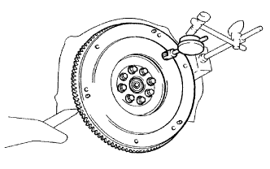
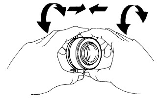
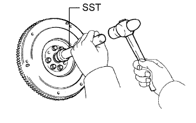

БЛОК СЦЕПЛЕНИЯ (для моделей с 5L-E) > ПРОВЕРКА |
| 1. INSPECT CLUTCH DISC ASSEMBLY |
Using a vernier caliper, measure the rivet head depth.
 |
Using a dial indicator, check the disc runout.
| 2. INSPECT CLUTCH COVER ASSEMBLY |
Using a vernier caliper, measure the depth and width of the worn areas of the diaphragm spring.
| Item | Specified Condition |
| Width | 6.0 mm (0.236 in.) |
| Depth | 0.35 mm (0.0137 in.) |
| *a | Width |
| *b | Depth |
| 3. INSPECT FLYWHEEL SUB-ASSEMBLY |
|  |
Using a dial indicator, measure the flywheel runout.
| 4. INSPECT CLUTCH RELEASE BEARING ASSEMBLY |
|  |
Check that the bearing turns smoothly by hand by applying force in the axial direction.
If the bearing sticks or has a considerable amount of resistance, replace the release bearing.
| 5. INSPECT INPUT SHAFT FRONT BEARING |
 |
Check that the bearing turns smoothly by hand by applying rotational force.
If the bearing sticks or has a considerable amount of resistance, replace the input shaft front bearing.
| 6. REPLACE INPUT SHAFT FRONT BEARING |
Remove any 2 diametrically opposite bolts.
 |
Using SST, remove the input shaft bearing.
|  |
Using SST and a hammer, tap in a new bearing.
Apply adhesive to 2 or 3 threads of the bolts.
Install the 2 bolts.